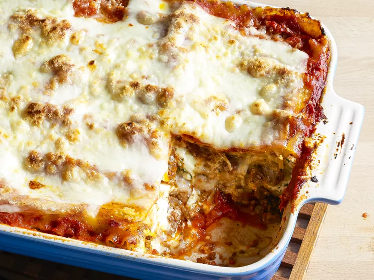

Lasagna

How to make Lasagna
Making lasagna can be time-consuming, but the results are
well worth the wait. You'll find a detailed ingredient list and
step-by-step instructions in the recipe below, but let's go over the
basics:
Ingredients
- Meat
- Onion and garlic
- Tomato products
- Sugar
- Spices and seasonings
- Lasagna noodles
- Cheeses
- Egg
Steps
- Meat sauce
- Noodles
- Ricotta mixture
- Mozzarella slices
- Meat sauce
- Parmesan cheese
- Repeat the layers, then top with the remaining Parmesan.